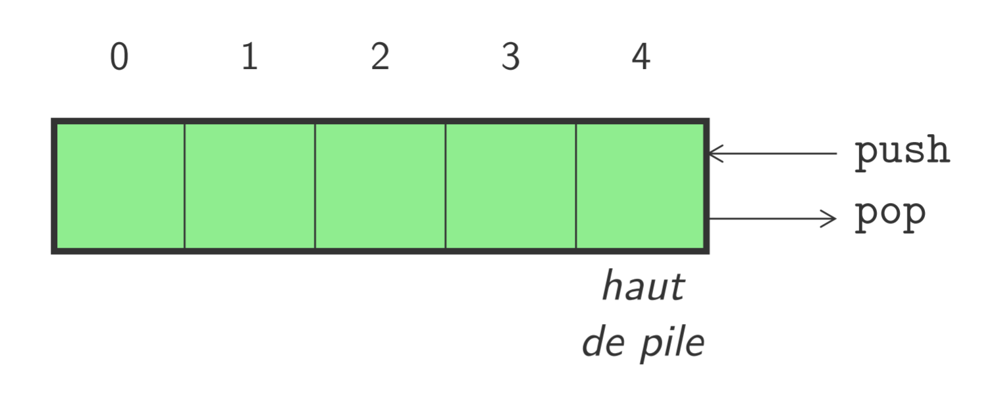
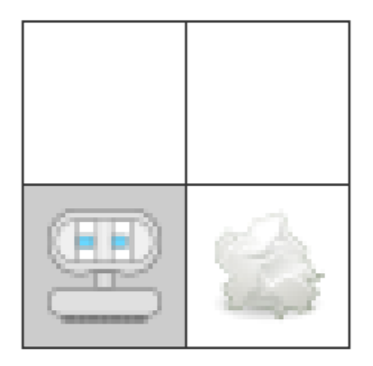
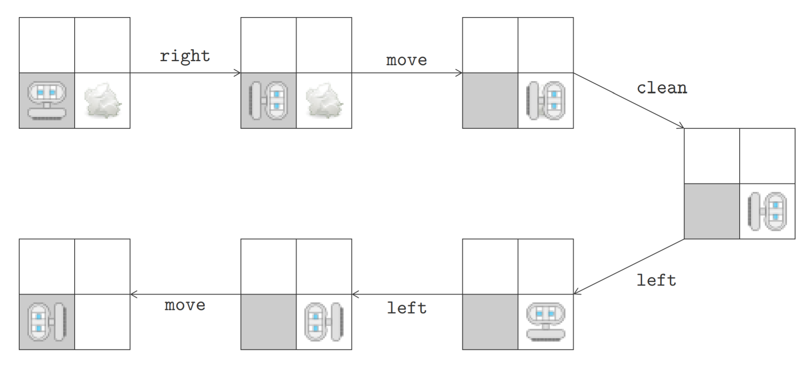

PI2C - Types abstraits de données, Recherche, Théorie des jeux
Types abstraits de données
- Type abstrait de données (TAD) spécifie mathématiquement
- Un ensemble de données
- Les opérations qu’on peut effectuer
- Correspond à un cahier des charges Implémentation du CDC par une structure de données
- Plusieurs implémentations possibles pour un même TAD Se différencient par la complexité calculatoire et spatiale
File
- Séquence de type First-in First-out (FIFO)
Le premier élément qui a été ajouté sera le premier à sortir
- Opérations possibles:
size: donne la taille de la fileisEmpty: teste si la file est videfront: récupère l’élément en début de fileenqueue: ajoute un élément en fin de filedequeue: retire l’élément en début de file

Pile
- Séquence de type Last-in First-out (LIFO)
Le dernier élément qui a été ajouté sera le premier à sortir
- Opérations possibles:
size: donne la taille de la pileisEmpty: teste si la pile est videtop: récupère l’élément en haut de la pilepush: ajoute un élément en haut de la pilepop: retire l’élément en haut de la pile

Arbre
- Éléments d’un arbre organisés de manière hiérarchique
Un arbre est un ensemble de nœuds (qui contiennent les valeurs)
- Chaque nœud possède un parent et zéro ou plusieurs enfants
Sauf la racine de l’arbre qui n’a pas de parent

Définition récursive
- Deux cas possibles pour définir un arbre
- Un arbre vide (sans enfants)
- Un nœud avec un élément et une liste de sous-arbres

- Opérations possibles
size: donne la taille de l’arbrevalue: récupère la valeur stockée à la racine de l’arbrechildren: récupère la liste des sous-arbres enfants de la racineaddChild: ajoute un sous-arbre comme enfant à la racine
Tree
import copy
class Tree :
def __init__ (self, value, children=[]):
self.__value = value
self.__children = copy.deepcopy(children)
@property
def value(self):
return self.__value
@property
def children(self):
return copy.deepcopy(self.__children)
def addChild (self, tree):
self.__children.append(tree)
@property
def size(self):
result = 1
for child in self.__children:
result += child.size
return result
def __getitem__(self, index):
return self.__children[index]
def __str__(self):
def _str (tree, level):
result = '[{}]\n'.format(tree.__value)
for child in tree.children:
result += '{}|--{}'.format(' ' * level, _str(
child, level + 1))
return result
return _str(self, 0)
t1 = Tree(-9)
t2 = Tree(25, [t1])
t3 = Tree(12)
t4 = Tree(14)
t = Tree(11, [t2, t3, t4])
Etat
- L'état d’un système le décrit à un instant donné
Typiquement décrit par un ensemble de variables avec leur valeur
- Modification de l’état selon le type d’environnement
Environnement de type discret ou continu
- Au départ, le système est dans un état initial
Action
- Une action est effectuée sur l’environnement
Modification de l’état de l’environnement suite à l’action
- Ensemble d'actions possibles pour chaque état
Des actions peuvent être indisponibles dans certains états
- Définition d’une action par une fonction successeur

Robot nettoyeur
- Robot dans une pièce à nettoyer
Démarre de sa base et doit y retourner après avoir tout inspecté
- Description de l'état composée de deux éléments
- Contenu de chaque case (robot, déchet)
- Direction courante du robot

Robot nettoyeur: actions
- Quatre actions possibles
move avance d’une case dans la direction couranteleft tourne sur lui-même de 90 degrés vers la gaucheright tourne sur lui-même de 90 degrés vers la droiteclean nettoie la case sur laquelle il se trouve
- L’objectif est d’avoir nettoyé toutes les cases
Et d’éventuellement être revenu à la case de départ
Arbre d'exécution
- L'arbre d’exécution reprend toutes les exécutions possibles
Cet arbre peut éventuellement être infini
- État dans les nœuds et actions sur les arêtes
Nombre maximum de fils correspond au nombre d’actions
- Un chemin dans l’arbre représente une exécution donnée
L’arbre représente donc bien toutes les exécutions

Espace d'états
- Représentation compacte sous forme d’un graphe
On ne duplique plus les états égaux
- Espace d’états complètement défini par
- l’état initial
- et la fonction successeur
- Un chemin dans le graphe représente une exécution donnée
Une boucle indique une exécution infinie possible

Coût et objectif
- Possibilité d’ajouter un coût pour les actions
Coût pour effectuer une action qui mène d’un état à un autre
- Minimiser coût du chemin d’exécution de la solution
Différence entre solution et solution optimale
- L’objectif est l’ensemble des états à atteindre
Une solution est un chemin de l’état initial à un objectif
Solution
- La solution optimale pour le robot fait six actions
Cette solution n’est pas unique

Algorithme de recherche
- Quatre critères pour évaluer les performances d’un algorithme
- Complétude : l’algorithme trouve-t-il toujours une solution ?
- Optimalité : la solution trouvée est-elle la meilleure ?
- Complexité temporelle : temps pour trouver la solution
- Complexité spatiale : mémoire pour trouver la solution
- Selon la situation, certains critères seront ignorés
Parfois, l’algorithme boucle et ne termine donc jamais
Recherche non informée
- Recherche non informée ou recherche aveugle
Exploration complète de l’espace d’états
- Recherche basée uniquement sur la définition du problème
- Génération d’états avec la fonction successeur
- Test de si un état fait partie de l’objectif ou non
- Distinction entre algorithmes selon l’ordre d’exploration
Peut conduire à atteindre plus ou moins vite une solution
Breadth-First Search
- Exploration successives des successeurs en largeur
D’abord les successeurs d’un nœuds avant leurs successeurs...
- Exploration de l’arbre d’exécution par niveaux
Algorithme complet, mais pas forcément optimal

- Complexité temporelle de l’algorithme en \(O(b^{d})\)
- \(b\) facteur de branchement (nombre maximum de fils)
- \(d\) la profondeur d’une solution (de la moins profonde)
- Même complexité spatiale
- Optimal lorsque tous les couts sont identiques
Exploration du nœud non exploré le moins profond
Breadth-First Search
class Queue:
data = []
def enqueue(self, value):
self.data.append(value)
def dequeue(self):
return self.data.pop(0)
def BFS(start, successors, goals):
q = Queue()
parent = {}
parent[start] = None
node = start
while node not in goals:
for successor in successors(node):
if successor not in parent:
parent[successor] = node
q.enqueue(successor)
node = q.dequeue()
res = []
while node is not None:
res.append(node)
node = parent[node]
return list(reversed(res))
def successors(node):
laby = [
"##########",
"# E",
"# # ######",
"# # #",
"# # # ####",
"##### #",
"# # ####",
"# # # # #",
"# # #",
"##########",
]
directions = [(0, 1), (0, -1), (1, 0), (-1, 0)]
res = []
l, c = node
for dl, dc in directions:
nl = l + dl
nc = c + dc
try:
if laby[nl][nc] in [' ', 'E']:
res.append((nl, nc))
except IndexError:
pass
return res
print(BFS((8, 1), successors, [(1, 9)]))
Depth-First Search
- Exploration d’abord en profondeur
D’abord explorer le nœud non exploré le plus profond
- Descente jusqu’à une feuille de l’arbre
Pas complet (peut être coincé dans une boucle), ni optimal

- Complexité temporelle de l’algorithme en \(O(b^m)\)
- \(b\) facteur de branchement (nombre maximum de fils)
- \(m\) la profondeur maximale dans l’arbre
- Complexité spatiale de l’algorithme en \(O(bm)\)
La variante recherche backtracking ne nécessite que \(O(m)\)
Depth-First Search
class Stack:
data = []
def push(self, value):
self.data.append(value)
def pop(self):
return self.data.pop()
def DFS(start, successors, goals):
s = Stack()
parent = {}
parent[start] = None
node = start
while node not in goals:
for successor in successors(node):
if successor not in parent:
parent[successor] = node
s.push(successor)
node = s.pop()
res = []
while node is not None:
res.append(node)
node = parent[node]
return list(reversed(res))
def successors(node):
laby = [
"##########",
"# E",
"# # ######",
"# # #",
"# # # ####",
"##### #",
"# # ####",
"# # # # #",
"# # #",
"##########",
]
directions = [(0, 1), (0, -1), (1, 0), (-1, 0)]
res = []
l, c = node
for dl, dc in directions:
nl = l + dl
nc = c + dc
try:
if laby[nl][nc] in [' ', 'E']:
res.append((nl, nc))
except IndexError:
pass
return res
print(DFS((8, 1), successors, [(1, 9)]))
Recursive Depth-First Search
def RDFS(start, successors, goals, res=[]):
res.append(start)
if start in goals:
return True
for successor in successors(start):
if successor not in res:
if RDFS(successor, successors, goals, res):
return True
res.pop()
return False
def successors(node):
laby = [
"##########",
"# E",
"# # ######",
"# # #",
"# # # ####",
"##### #",
"# # ####",
"# # # # #",
"# # #",
"##########",
]
directions = [(0, 1), (0, -1), (1, 0), (-1, 0)]
res = []
l, c = node
for dl, dc in directions:
nl = l + dl
nc = c + dc
try:
if laby[nl][nc] in [' ', 'E']:
res.append((nl, nc))
except IndexError:
pass
return res
res = []
print(RDFS((8, 1), successors, [(1, 9)], res))
print(res)
Recherche informée
- Recherche informée utilise des connaissances spécifiques
Beaucoup plus efficace que les recherches non informées
- Stratégie générale de type Best-First Search
Choix du meilleur nœud à explorer à chaque étape
- Fonction d’évaluation \(f(n)\)
Choix du nœud à explorer avec la plus faible valeur
- Fonction heuristique \(h(n)\)
Cout estimé du chemin le moins cher vers l’objectif
Greedy Best-First Search
- Choix du nœud le plus proche de l’objectif
En utilisant \(f(n) = h(n)\)
- L'heuristique est choisie en fonction du problème
Souvent une mesure de distance vers l’objectif
- Complexité temporelle en \(O(b^m)\) et spatiale en \(O(b^m)\)
Réduit en fonction du problème et de la qualité de l’heuristique
Greedy Best-First Search
class PriorityQueue:
data = []
def enqueue(self, value, priority):
# Could be better
self.data.append({'value': value, 'priority': priority})
self.data.sort(key=lambda elem: elem['priority'])
def dequeue(self):
return self.data.pop(0)['value']
def BestFS(start, successors, goals, heuristic):
q = PriorityQueue()
parent = {}
parent[start] = None
node = start
while node not in goals:
for successor in successors(node):
if successor not in parent:
parent[successor] = node
q.enqueue(successor, heuristic(successor))
node = q.dequeue()
res = []
while node is not None:
res.append(node)
node = parent[node]
return list(reversed(res))
def successors(node):
laby = [
"##########",
"# E",
"# # ######",
"# # #",
"# # # ####",
"##### #",
"# # ####",
"# # # # #",
"# # #",
"##########",
]
directions = [(0, 1), (0, -1), (1, 0), (-1, 0)]
res = []
l, c = node
for dl, dc in directions:
nl = l + dl
nc = c + dc
try:
if laby[nl][nc] in [' ', 'E']:
res.append((nl, nc))
except IndexError:
pass
return res
def heuristic(node):
l, c = node
return (l - 1)**2 + (c - 9)**2
print(BestFS((8, 1), successors, [(1, 9)], heuristic))
\(A^*\) Search
- \(A^*\) (prononcé "A-star") combine deux fonctions
- \(g(n)\) donne le coût d’avoir atteint \(n\)
- \(h(n)\) heuristique du coût pour atteindre l’objectif depuis \(n\)
- Fonction d’évaluation \(f(n) = g(n) + h(n)\)
Coût estimé pour atteindre l'objectif en passant par \(n\)
- Complet et optimal si \(h(n)\) est admissible
\(h(n)\) ne surestime jamais le coût pour atteindre l’objectif
Théorie des jeux
- Recherche de solution pour des jeux avec deux adversaires
- Arbre du jeu défini par l’état initial et les mouvements légaux
- Jeu de somme nulle lorsque la somme des gains vaut 0
Le gain de l’un correspond obligatoirement à une perte de l’autre
- Jeu avec information parfaite pour les joueurs
Toute l’information du plateau est accessible aux deux joueurs
- Pas de chance impliquée dans le jeu
Algorithme Minimax
- Deux joueurs appelés MIN et MAX (joue en premier)
- Définition comme un problème de recherche
- État initial : position sur le plateau et joueur qui commence
- Fonction successeur : liste de paires (move,state)
- Test terminal : teste si le jeu est terminé (état terminaux)
- Fonction d’utilité : donne une valeur aux états terminaux
- MAX veut atteindre un état gagnant (terminal)
Tout en sachant que MIN a son mot à dire
- Jouer le meilleur coup possible à chaque tour
En supposant que le joueur en face suit une stratégie parfaite
Valeur minimax
- Fonction MinimaxValue associe une valeur à chaque nœud n
Définition récursive de cette fonction
- Hypothèse que les deux joueurs jouent parfaitement
- MAX préfère aller vers une situation de plus grande valeur
- et MIN de plus petite valeur
$$ MinimaxValue(n) = \left\{ \begin{array}{ll} Utility(n) & \textrm{si $n$ est un noeud terminal}\\ max_{s \in successors(n)} MinimaxValue(s) & \textrm{si $n$ est un noeud MAX}\\ min_{s \in successors(n)} MinimaxValue(s) & \textrm{si $n$ est un noeud MIN} \end{array} \right.$$
Algorithme Minimax
- Arbre du jeu avec \(\bigtriangleup\) pour MAX et \(\bigtriangledown\) pour MIN
MAX choisit toujours le coup qui maximise la valeur minimax


- Peut-être optimisé avec Alpha-Beta pruning
- Variantes: negamax, depth limited minimax, iterative-deepening depth limited minimax